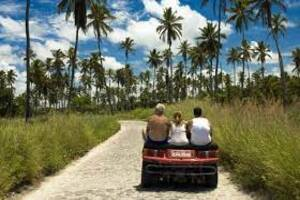
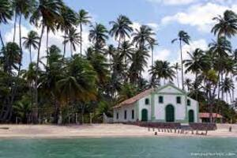
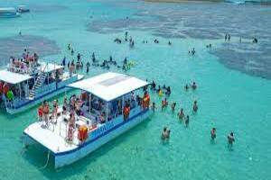
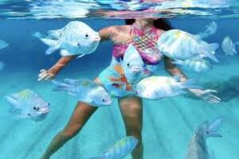
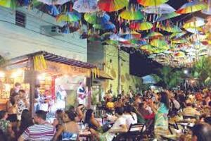

Porto de Galinhas
Ubicado en el municipio de Ipojuca, a 60 km de Recife, Porto de Galinhas es el principal polo turístico del litoral sur de Pernambuco. En el centro del pueblo, caminar es la mejor manera de conocer las artesanías producidas por los nativos. Hay pollos de cerámica -souvenir oficial-, bordados, hamacas, mantas... La gastronomía también ocupa un lugar destacado, con restaurantes que ofrecen platos a base de pescados y mariscos y también cocina regional, como la carne seca al sol y el pollo estofado.
¿Por qué Porto de Galinhas tiene este nombre?
Antiguamente, Porto de Galinhas se llamaba Puerto Rico, debido a la extracción de Pau Brasil. Cuando los esclavos llegaban para ser vendidos, contrabandeados, se escondían bajo cajones de pintadas. La llegada de los esclavos a la playa se anunció con la contraseña "Tem galinha nova no Porto!". Debido a esto, Puerto Rico pasó a ser conocido como Porto das "galinhas". De ahí el nombre de Porto de Galinhas.
Mucha diversión..
En cada rincón de este paraíso podemos descubrir y comprobar cómo la naturaleza ha sido generosa. De día podemos caminar en la arena, surfear, bucear, andar en buggy, jet ski, balsa, caminata, bicicleta, caballo, kite surf o simplemente no hacer nada.
- 
- 
- 

- 
- 